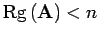
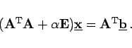

Inhalt Index DeskTop Bronstein

 Lineare Algebra Lineare Gleichungssysteme Überbestimmte lineare Gleichungssysteme Hinweise zur numerischen Lösung linearer Quadratmittelprobleme
Lineare Algebra Lineare Gleichungssysteme Überbestimmte lineare Gleichungssysteme Hinweise zur numerischen Lösung linearer Quadratmittelprobleme


Im rangdefizienten Fall, d.h., wenn  ist, kann das Normalgleichungssystem nicht mehr eindeutig gelöst werden, und auch die Orthogonalisierungsverfahren liefern unbrauchbare Ergebnisse. Dann geht man an Stelle von (4.119) zu dem sogenannten regularisierten Problem
über. Dabei ist  ein Regularisierungsparameter. Die Normalgleichungen zu (4.121) lauten:
ein Regularisierungsparameter. Die Normalgleichungen zu (4.121) lauten:
|  | (4.122) |
Die Koeffizientenmatrix dieses linearen Gleichungssystems ist für  positiv definit und insbesondere regulär, aber die Wahl eines geeigneten Regularisierungsparameters
positiv definit und insbesondere regulär, aber die Wahl eines geeigneten Regularisierungsparameters  ist ein schwieriges Problem (s. Lit. 4.7).
ist ein schwieriges Problem (s. Lit. 4.7).